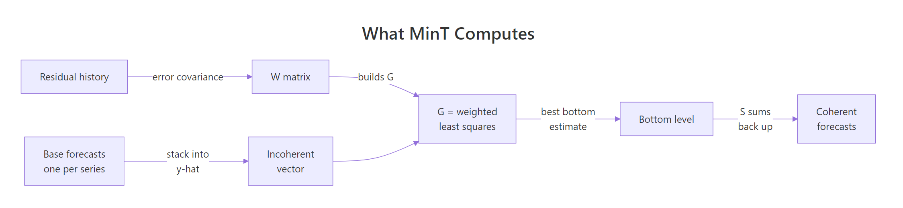
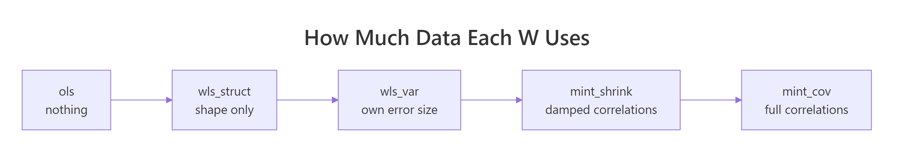
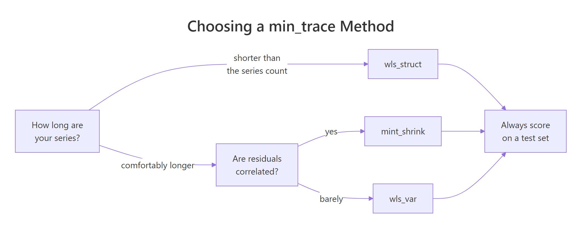

Optimal Forecast Reconciliation in R: MinT with fable
MinT, short for minimum trace, is a forecast reconciliation method that nudges every forecast in a hierarchy at once so the parts add up to the whole, and it picks the nudge that makes the total variance of the reconciled forecast errors as small as possible. This tutorial builds it from the ground up in R with fable, rebuilds what min_trace() computes using nothing but solve() and matrix multiplication, and then measures on held-out data whether it actually forecasts better.
What does MinT reconciliation actually do?
Bottom-up, top-down and middle-out all work the same way. Each one nominates a single level of the hierarchy, treats that level's forecasts as correct, and rebuilds every other level from it, discarding every forecast made anywhere else. MinT keeps all of them instead. The fastest way to see the difference is to run both and put the numbers next to each other.
We will use Tasmanian tourism, from the tourism dataset that ships with the tsibble package. It records quarterly overnight trips in Australia from 1998 to 2017. Keeping one state and breaking it down by trip purpose gives us five series: four purposes plus their total. Five is small enough that we can print every matrix in full later on and check the arithmetic by hand.
Four things happened there. summarise() collapsed Tasmania's regions so that purpose is the only breakdown left, and as_tsibble() declared the time column and the column that identifies a series. aggregate_key(Purpose, ...) then added the total as extra rows, labelled <aggregated>. Finally model() fitted an independent exponential smoothing model to each of the five series, and reconcile() added two more columns that reuse those five fits without refitting anything.
Now read the table across. The base column is what the five models said on their own: 137.7 for Business, 627.8 for Holiday, 25.7 for Other, 230.3 for Visiting. Add those four and you get 1021.5, but the model fitted to the total says 1120.2. The same data, the same software, two answers that differ by 98.7 thousand trips.
The bottom_up column fixes this by ignoring the total's model. The four purposes are untouched, and the total is simply overwritten with their sum. The mint column does something different: every single number changed. Business moved up, Holiday moved up, and the total came down from 1120.2 to 1078.8, landing between the two original answers.
Both fixes are supposed to be coherent, meaning the parts genuinely add to the whole. Let's not take that on trust.
is_aggregated() is the test fable gives you for "is this row one of the <aggregated> rows aggregate_key() added?", so x[!is_aggregated(Purpose)] picks the four purposes and x[is_aggregated(Purpose)] picks the total. For each column we then added the four purpose forecasts and subtracted the total forecast. If the numbers are coherent, that difference is zero. The base forecasts miss by -98.686, so the four purposes fall almost 99 thousand trips short of what the total's own model predicts. Both reconciled columns come back exactly zero.
That single number, -98.686, is the whole problem. Bottom-up puts all 98.686 of it on the total. MinT splits it across all five series, giving the largest share to the series whose past forecast errors were largest, which is the calculation the rest of this tutorial works through.
Try it: MinT moved every one of the five forecasts. Measure how far. Compute the difference between the mint and base columns for each purpose.
Click to reveal solution
Explanation: The four upward moves add to 57.2 and the total moves down 41.4, which together close the 98.686 gap. Notice that Holiday absorbed 41.4 of the adjustment while Other absorbed 1.4. MinT put most of the correction on Holiday, whose past forecast errors are much the largest of the four, and left the closely forecast series nearly alone. The next two sections show where that ranking comes from.
Why does using every level beat trusting just one?
Imagine five instruments in a room, all measuring parts of the same quantity. Four measure a component each, the fifth measures the whole room, and the four disagree with the fifth. If you throw away the fifth reading and just add up the four, you have made a decision: the room instrument is worthless. That is exactly what bottom-up does, and in this hierarchy it is a bad decision.
We can check it directly. Every fitted model leaves behind residuals, the gaps between what it predicted one step ahead and what actually happened. Small residuals mean the model tracks its series well. accuracy() summarises them into error scores, and we need two: RMSE, the root mean squared error, which is in the same units as the data, and MAPE, the mean absolute percentage error.
Read the RMSE column and the total looks like the worst series in the table at 79.17. That reading is wrong, and it is the single most common mistake people make with hierarchies. RMSE is measured in trips, and the total is roughly six times bigger than any purpose, so of course its errors are bigger in absolute terms.
MAPE divides the error by the size of the thing being forecast, which is the fair comparison. On that scale the total is the best forecast series in the hierarchy at 9.74 percent, against 31.53 percent for Other.
So bottom-up discards the most accurately forecast series in the hierarchy. Does its replacement total actually do worse? We can answer that without any forecasting at all, by comparing the total's own one-step residuals against the sum of the four bottom-level residuals. That sum is precisely the error bottom-up would have made at the top, quarter after quarter.
residuals(type = "response") pulls the one-step errors in the original units of the data, and pivot_wider() reshapes them into a matrix E with 80 rows, one per quarter, and 5 columns, one per series. We will reuse E heavily from here on, so it is worth knowing exactly what it holds: column 5 is the total's own error each quarter, and rowSums(E[, 1:4]) is the error bottom-up would have made at the top that same quarter.
The total's own model has an error standard deviation of 78.90. Bottom-up's implied total has 81.09. Adding the four purposes is measurably worse than just asking the total's model, by about 3 percent. That is a small loss here, but it is a loss taken for nothing, and in bigger hierarchies it is much larger.
There is a second reason the bottom-level errors do not simply cancel out when you add them. They are related to each other.
Try it: Look for that relationship. Correlate the four bottom-level residual columns, E[, 1:4], and round to 2 decimals.
Click to reveal solution
Explanation: Holiday and Visiting errors move together at 0.42. In a quarter where the holiday model's error is large and positive, the visiting-friends model's error that quarter is usually positive too, which makes sense since both respond to school holidays and weather. That correlation is real information about the hierarchy, and bottom-up cannot use it. MinT can.
What are the two matrices behind every reconciliation?
Everything from here rests on two matrices. Once you have them, MinT stops being a package feature and becomes four lines of linear algebra you could write yourself.

Figure 1: MinT builds its mapping from the residual history, then sums the result back up the hierarchy.
The first matrix is called the summing matrix, written $\mathbf{S}$. It is a lookup table that says how to build every series in the hierarchy out of the bottom-level series alone. Our hierarchy has 4 bottom series and 5 series in total, so $\mathbf{S}$ has 5 rows and 4 columns. Each row is a recipe: put a 1 in a column if that bottom series contributes to this row, and a 0 if it does not.
diag(4) gives the 4 by 4 identity matrix, which says each bottom series is built from itself and nothing else. rep(1, 4) is the extra row for the total, which is built from all four. That is the entire hierarchy encoded in 20 numbers.
aggregate_key() records the structure when it creates the aggregate rows and min_trace() reconstructs S internally, so we build it here only to make the algebra visible. Textbooks put the total in the first row while fable puts <aggregated> last; neither is more correct, and all that matters is that S, the residual matrix and the forecast vector share one order, which is why we defined series once and index everything by it.The second matrix is $\mathbf{G}$. Where $\mathbf{S}$ builds the hierarchy up from the bottom, $\mathbf{G}$ goes the other way: it takes all 5 base forecasts and boils them down to 4 bottom-level numbers. It has 4 rows and 5 columns. Every reconciliation method in existence is one particular choice of $\mathbf{G}$, and the reconciled forecasts are always
$$\tilde{\mathbf{y}} = \mathbf{S}\,\mathbf{G}\,\hat{\mathbf{y}}$$
where $\hat{\mathbf{y}}$ is the stack of 5 base forecasts, $\mathbf{G}$ maps them down to the bottom level, and $\mathbf{S}$ sums them back up. Because the last step is always $\mathbf{S}$, the result is coherent no matter what $\mathbf{G}$ you pick. That is worth pausing on: coherence is free and automatic. The only thing $\mathbf{G}$ affects is accuracy.
Bottom-up is the easiest $\mathbf{G}$ to write. It says: take the four bottom forecasts as they are, and ignore the total.
G_bu is the identity matrix with a column of zeros glued on the end. Multiplying it by yhat keeps the first four forecasts and multiplies the total by zero, discarding it, and then S %*% adds those four back up. The result, 137.68, 627.85, 25.70, 230.28, 1021.51, is exactly the bottom_up column from the very first table. We have just reimplemented bottom_up() in one line.
Try it: Build a different G. Make one that ignores all four bottom forecasts and instead gives every purpose one quarter of the total, then sums back up.
Click to reveal solution
Explanation: The first four columns are zero, so the bottom forecasts are ignored entirely. The last column is 0.25 in every row, so each purpose gets a quarter of 1120.19. This is a crude top-down method, and it is coherent, which proves the point: coherence tells you nothing about quality. Splitting Tasmania's tourism equally between business and holiday travel is obviously nonsense, yet the numbers add up perfectly.
Why does MinT minimise the trace of the forecast error covariance?
We now have infinitely many coherent options and no way to rank them. MinT's answer is to pick the $\mathbf{G}$ that makes the reconciled forecasts as accurate as possible, and to define "as accurate as possible" in a way that can be solved with algebra rather than search.
Start with the errors. Let $\mathbf{W}$ be the covariance matrix of the base forecast errors: entry $(i,j)$ says how the error on series $i$ moves with the error on series $j$. Since the reconciled forecast is $\mathbf{S}\mathbf{G}\hat{\mathbf{y}}$, a fixed matrix times the base forecasts, its error covariance is that same fixed matrix applied on both sides:
$$\mathbf{V} = \mathbf{S}\mathbf{G}\,\mathbf{W}\,\mathbf{G}'\mathbf{S}'$$
The diagonal of $\mathbf{V}$ holds the error variance of each reconciled series. Adding the diagonal up gives the total forecast error variance across the whole hierarchy, and the sum of a matrix diagonal has a name: the trace. So minimising the trace of $\mathbf{V}$ means making the hierarchy's total forecast error variance as small as it can be. That is where "minimum trace" comes from.
One constraint stops the answer being degenerate. We want the reconciled forecasts to stay unbiased whenever the base forecasts are unbiased, and that holds exactly when
$$\mathbf{S}\mathbf{G}\mathbf{S} = \mathbf{S}$$
In words: if you take a set of forecasts that are already coherent, running them through reconciliation must leave them alone. Minimising the trace subject to that constraint has a closed-form solution, derived by Wickramasuriya, Athanasopoulos and Hyndman:
$$\mathbf{G} = (\mathbf{S}'\mathbf{W}^{-1}\mathbf{S})^{-1}\mathbf{S}'\mathbf{W}^{-1}$$
Where:
- $\mathbf{S}$ = the summing matrix, 5 by 4 in our example
- $\mathbf{W}$ = the covariance matrix of the base forecast errors, 5 by 5
- $\mathbf{W}^{-1}$ = its inverse, which is what does the weighting: series with small errors get large weight
- $\mathbf{G}$ = the resulting map from base forecasts down to the bottom level, 4 by 5
If that formula looks familiar, it should. It is the generalised least squares estimator, the same one behind weighted regression. MinT is a regression of the base forecasts onto the coherent subspace, weighted by how much you trust each forecast. Everything else in this tutorial is about where $\mathbf{W}$ comes from.
If you would rather not work through the algebra, you can skip to the code below. The formula above is the only thing you need to carry forward.
So how do we get $\mathbf{W}$? We estimate it from the residuals we already have in E. Here is the exact expression fabletools uses internally.
crossprod(E) computes t(E) %*% E, so entry $(i,j)$ is the sum over all 80 quarters of residual $i$ times residual $j$, and dividing by n averages them. This is not quite cov(): it does not subtract the column means, because a well-fitted forecast model should already have residuals centred on zero. The diagonal holds the error variances, and 6267.2 for the total is close to the square of the 78.90 we computed earlier. The off-diagonal entries carry the correlations, and the large 4132.1 between Holiday and the total says the total's errors are mostly holiday errors.
Now we can settle the argument with numbers. Build MinT's $\mathbf{G}$ from the formula, then score both candidate reconciliations by the quantity MinT claims to minimise.
trace_of() is the formula $\mathbf{V} = \mathbf{S}\mathbf{G}\mathbf{W}\mathbf{G}'\mathbf{S}'$ written directly in R, with diag() pulling out the variances and sum() adding them. Bottom-up scores 11568.1 and MinT scores 10885.0, about 6 percent lower. MinT wins here by construction, because it solved the optimisation that this number defines. The real question, which we come back to in the accuracy section, is whether that advantage survives on data the models have never seen.
Try it: Check that both reconciliations respect the unbiasedness condition. Verify that $\mathbf{S}\mathbf{G}\mathbf{S}$ equals $\mathbf{S}$ for G_bu and for G_mint.
Click to reveal solution
Explanation: Bottom-up satisfies the condition exactly and MinT satisfies it to 3.77e-15, which is floating-point noise from inverting a 5 by 5 matrix. Try the same check on the G_eq you built earlier and you will get a large non-zero number. That is the formal statement of why top-down methods are biased: they fail this condition, so even perfectly unbiased base forecasts come out skewed.
Can you rebuild min_trace()'s answer by hand?
We have a formula for $\mathbf{G}$ and a way to estimate $\mathbf{W}$. If our understanding is right, putting them together should reproduce min_trace() digit for digit. Let's test that.
We will use the simplest realistic weighting first. Take the diagonal of W and throw away everything else. That keeps each series' own error variance and pretends the series are unrelated. This is what fable calls method = "wls_var", and it is the default.
diag(diag(W)) is a two-step idiom worth knowing: the inner diag() pulls the diagonal out as a vector, and the outer diag() builds a fresh matrix with that vector on its diagonal and zeros everywhere else. The next line is the closed-form solution copied straight from the maths, and the third applies it. Now ask fable for the same thing.
The largest disagreement anywhere in the five numbers is 2.842171e-14, which is about a hundred-millionth of a millionth of a trip. That is the precision limit of double-precision arithmetic, not a difference in method. Our three lines and fable's min_trace() are computing the same thing.
This matters for more than satisfaction. Once you know min_trace() is solve(t(S) %*% solve(W) %*% S) %*% t(S) %*% solve(W), you can reason about it: it will slow down as the hierarchy grows, because inverting $\mathbf{W}$ costs roughly the cube of the number of series, and it will fail outright if $\mathbf{W}$ cannot be inverted. Most usefully, you know that choosing a method means choosing $\mathbf{W}$, nothing more.
min_trace() switches to sparse linear algebra automatically. You can force the choice either way with the sparse argument.Try it: Run the rebuild once more with the least informative weighting there is. Use the 5 by 5 identity matrix, which treats every series as equally reliable and uncorrelated.
Click to reveal solution
Explanation: With every series weighted equally, the 98.686 gap is shared out almost evenly: each purpose picks up about 19.7 and the total drops by the same amount. Look at Other, which went from 25.7 to 45.4, a 77 percent increase on a series whose entire error variance is 71.4. Treating a tiny series as equally reliable as a series 50 times its size is how ordinary least squares gets into trouble.
What changes between the five min_trace methods?
min_trace() accepts five values for method, and they all run the identical formula. The only thing that changes is $\mathbf{W}$, and what changes with $\mathbf{W}$ is how much of the residual history the reconciliation is allowed to look at.

Figure 2: The five methods differ only in how much of the residual history the W matrix is allowed to see.
| method | What W is | Uses the data? |
|---|---|---|
ols |
Identity matrix | No |
wls_struct |
Diagonal, each entry counts the bottom series feeding that row | No, structure only |
wls_var |
Diagonal of the residual covariance | Yes, variances only |
mint_shrink |
Residual covariance pulled part-way toward its diagonal | Yes, damped correlations |
mint_cov |
Full residual covariance | Yes, all correlations |
Only wls_struct needs explaining. Its entry for a row is simply the number of bottom-level series that feed into it, on the reasoning that a total built from four series should have roughly four times the error variance of one of them. It is the method to reach for when you have no residuals at all, for instance when the base forecasts came from a human judgement process rather than a model.
Let's line up the four diagonal choices and see how different they really are.
The ols column says every series is equally trustworthy. The wls_struct column says the total is four times as uncertain as a purpose, which is a reasonable guess from the shape of the tree. The wls_var column measures it instead, and finds the true ratio between Holiday and Other is 3557.9 to 71.4, roughly 50 to 1, which no amount of staring at the tree would have revealed.
Notice also that wls_var and mint_cov share an identical diagonal. They differ only in whether the off-diagonal correlations are kept.
Now run all five through fable and see what each one predicts.
ols claims you know nothing. wls_struct claims you know only the shape of the tree. wls_var claims you know each series' error size. mint_cov claims you know the whole correlation structure. Pick the strongest claim your data can actually support.The spread is wide. For the total the five methods span 1064.8 to 1144.1, a range of 79 thousand trips, which is most of the size of the original incoherence. Look at Other in particular: ols pushes it to 45.4 while wls_var moves it only to 26.3. wls_var weights each series by the inverse of its own error variance, and Other's variance is the smallest in the table at 71.4, so it carries the most weight and therefore takes the smallest correction.
mint_cov moves the forecasts furthest of the five. It is the only one using the off-diagonal correlations, and it alone sends Visiting down rather than up: Visiting's errors correlate with Holiday's at 0.42, so once mint_cov has raised Holiday it treats part of Visiting's shortfall as already covered. Those off-diagonal entries are also the least reliably estimated numbers in W, which brings us to shrinkage.
The problem with mint_cov is that a 5 by 5 covariance matrix has 15 distinct entries estimated from 80 observations, and that ratio gets worse fast. With 100 series you are estimating 5,050 numbers, and the correlations you measure are then mostly noise. mint_shrink handles this by pulling the estimated matrix part-way back toward its own diagonal, by an amount called the shrinkage intensity, written lambda, which is computed from the data rather than set by you. The rule for computing it is the one Schafer and Strimmer published in 2005 in Statistical Applications in Genetics and Molecular Biology, and fabletools implements it directly. Here is that calculation, transcribed exactly from the fabletools source.
The logic is a ratio of noise to signal. target is the diagonal-only matrix we want to shrink toward, and xs rescales the residuals so every column has unit scale, making the correlations comparable. v then estimates how uncertain each measured correlation is, while d measures how far each measured correlation sits from the target's zero.
Divide total uncertainty by total distance and you get lambda. When the correlations are wobbly relative to their own size, lambda goes up and the matrix is pulled hard toward the diagonal. Here it comes out at 0.103, so we travel 10 percent of the way.
Every correlation between the total and its four purposes has been pulled about 10 percent toward zero. Holiday drops from 0.875 to 0.785, Visiting from 0.699 to 0.627. The structure survives, the confidence in it is dialled back. Feed W_shrink into the same closed-form solution and you get the mint_shrink column from the table above, 148.2, 669.2, 27.1, 234.2 and 1078.8, which is exactly what the very first code block in this tutorial produced.
mint_shrink still runs on hierarchies where mint_cov stops with an error. The last section runs that failure and reads the message it prints.Try it: Confirm that lambda genuinely interpolates between the two methods we already know. Build W at lambda equal to 0 and at lambda equal to 1, and check what each one equals.
Click to reveal solution
Explanation: At lambda equal to 0 the shrunk matrix is exactly mint_cov's W, and at lambda equal to 1 it is exactly wls_var's W. So mint_shrink is not a sixth method at all. It is a dial between two of the methods you already understand, with the data choosing where the dial sits.
Which method forecasts best, and when does MinT fail?
Everything so far has been in-sample. MinT minimises the trace by construction, so of course it wins on a metric it was built to optimise using data it has already seen. The only test that counts is a holdout.

Figure 3: A starting point for choosing a method, to be confirmed on a holdout set.
Five series is too small for a fair contest, so we scale up. Breaking all of Australian tourism down by state and then by purpose gives 41 series: 32 state-and-purpose combinations, 8 state totals and one national total. That shape is what the slash in aggregate_key(State / Purpose, ...) asks for: the slash means Purpose is nested inside State, so fable adds an aggregate row for each of the 8 states as well as the single national row. A star instead, aggregate_key(State * Purpose, ...), would ask for a crossed structure, where you also get a row for each purpose summed across all states. We train on everything up to the end of 2015 and forecast the two years held back.
Three notes on the setup before reading the numbers. We fixed the ETS form to additive error, trend and season instead of letting ETS() select one per series, so the comparison is about reconciliation and not about model selection drifting between series. RMSE is averaged within each level, which is fair because we are comparing methods on the same series rather than series against each other. And mint_cov is missing from the list on purpose: at 41 series it has to estimate a 41 by 41 covariance matrix well enough to invert, which is the case it handles worst, and the next code block shows what happens when you ask for it anyway.
Now the results, which are more interesting than the textbooks suggest. At the bottom level, where 32 of the 41 series live, every reconciliation beats the unreconciled base forecast, and mint_shrink is best at 83.7 against 92.1. Bottom-up ties with base at exactly 92.1, which it must, since bottom-up never touches the bottom level. At the state level mint_shrink wins again, 235.8 against 248.3 for base.
At the total, everything loses to the base forecast. Nothing beats simply asking the national model, at 571.3. Bottom-up is the worst by a long way at 1490.7, over two and a half times the base RMSE, which is the strongest argument against it in this tutorial. ols comes closest at 607.1, and mint_shrink sits at 956.1.
That pattern is not a bug in MinT, it is what the objective asks for. The trace it minimises is a sum over all 41 series, so it will trade accuracy away on the single national series whenever that buys more accuracy across the 32 bottom ones.
The practical reading follows directly. If your business genuinely only cares about the national total, reconciliation is the wrong tool and you should forecast that one series directly. If you need the whole hierarchy to be usable, mint_shrink gave you the best bottom and state forecasts in the table.
The other thing worth knowing is how min_trace() fails, because it fails loudly rather than silently. Cut the training window down to six years and the 41 series no longer have enough history to estimate a full 41 by 41 covariance matrix.
Three pieces of that block are worth naming. try(..., silent = TRUE) runs the pipeline and hands back the error object instead of halting, conditionMessage(attr(attempt, "condition")) pulls the message text out of that object, and the strsplit() plus tail() pair prints only its last line.
The message tells you the problem: 41 series and only 24 quarters of residuals. A covariance matrix estimated from fewer observations than series is guaranteed to be singular, which means it has no inverse, and the closed-form solution needs one. min_trace() checks the eigenvalues of W before solving and stops rather than returning a garbage answer.
Swap mint_cov for mint_shrink on the same data and it runs, because the shrinkage puts enough weight on the diagonal to make the matrix invertible again. That single property is why mint_shrink is the practical default for wide hierarchies.
Try it: Turn the bottom-level column of the holdout table into something easier to talk about. Express each method's RMSE as a percentage change against the base forecast.
Click to reveal solution
Explanation: A 9.1 percent cut in bottom-level RMSE, for zero extra modelling work, is a large return. The ordering also matches the ladder from Figure 2 exactly: the more of the residual history a method uses, the better it did here. That will not hold on every dataset, which is why you measure it.
Complete Example: reconcile Victorian livestock end to end
Here is the whole workflow on a hierarchy we have not touched, with nothing carried over from the sections above. Victorian livestock slaughter counts, from the aus_livestock dataset in tsibbledata, broken down by animal type: seven animals plus their total, monthly from 2010.
Five steps, and only one of them is new: build the hierarchy with aggregate_key(), fit one model per series with model(), add the MinT column with reconcile(), forecast with forecast(), then verify coherence.
That last step is the one people skip and should not. For all three months the reconciled total matches the sum of the seven animals to six decimal places, on counts in the millions.
Practice Exercises
Exercise 1: Build S and G for a new hierarchy
A hierarchy has three bottom-level series and one total, so four rows and three columns. Build its summing matrix my_S, write the bottom-up my_G, and confirm the unbiasedness condition holds. Save the maximum absolute discrepancy to my_hier.
Click to reveal solution
Explanation: The pattern generalises to any single-level hierarchy: diag(m) stacked under a row of ones gives S for m bottom series, and diag(m) with a zero column glued on gives bottom-up's G. Because both matrices contain only exact zeros and ones, the check returns a clean 0 with no floating-point residue at all.
Exercise 2: Rank the four W choices by trace
For the Tasmania hierarchy, compute the trace of the reconciled error covariance under all four W matrices built in this tutorial. Score every one of them with the full W, since that is our best estimate of the real error structure. Save the four traces to my_trace.
Click to reveal solution
Explanation: mint_cov wins at 10885.0, and it has to. The trace is being scored with the same W that mint_cov used to build its G, so this is the exact quantity the closed-form solution minimises. Any other choice of W solves a different problem and must score worse on this one. Compare these to the 11568.1 that bottom-up scored earlier: all four beat it. That is the theoretical case for MinT, and it is why the holdout test in the previous section matters so much, because the theory only holds when your estimate of W is right.
Exercise 3: Does MinT beat bottom-up on Tasmania?
Refit the Tasmania hierarchy on data up to the end of 2014, forecast the three years held back, and compare RMSE for base, bottom_up and mint_shrink averaged across all five series. Save the result to my_shrink.
Click to reveal solution
Explanation: Bottom-up wins at 60.49, with mint_shrink second at 61.99. Both beat the unreconciled base. This is the honest answer and it is worth sitting with, because it contradicts the 41-series result from the previous section. Five series give MinT only 15 covariance entries to work with and very little correlation structure to exploit, so its extra machinery earns nothing. MinT's advantage grows with the width of the hierarchy, and on a hierarchy this narrow bottom-up is hard to beat.
Frequently Asked Questions
Which method should I use if I only get one shot? mint_shrink. It uses the correlations when they are trustworthy, backs off when they are not, and never fails on a singular covariance matrix. If your series are shorter than the number of series in the hierarchy, wls_struct is the safer fallback since it does not touch the residuals at all.
Why is wls_var the default rather than mint_shrink? Speed and safety. wls_var inverts a diagonal matrix, which is trivially cheap and never singular, so it works on any hierarchy of any size without thought. It is a defensible default, not a recommendation for your specific problem.
Can reconciliation produce negative forecasts? Yes. Nothing in the closed-form solution knows your data cannot go below zero, and ols in particular can push a small series negative when it loads a large correction onto it. Check with sum(.mean < 0) on your fable. If it happens, use a variance-aware method such as wls_var or mint_shrink, which put much smaller corrections on small series, or model on a log scale.
Does reconciliation fix the prediction intervals too? Yes, in current fable. The reconciled distributions come from the same $\mathbf{S}\mathbf{G}$ mapping applied to the base forecast distributions, so the intervals are coherent along with the means. They are only as good as your $\mathbf{W}$ estimate, so a shaky covariance estimate gives shaky intervals.
What if my hierarchy does not aggregate by summing? min_trace() requires sums. Averages, ratios and medians break the $\mathbf{S}$ matrix, since $\mathbf{S}$ can only contain the zeros and ones that encode "add this in". Convert to a summable quantity first: forecast counts and totals rather than rates, then divide afterwards.
Can I tell MinT that one level matters more than the others? Not through min_trace(). The trace weights every series equally, and in principle you would weight the diagonal of $\mathbf{V}$ before summing it to tilt the optimisation toward the levels you care about, but fable exposes no argument for that. Your practical choice is between reconciling the whole hierarchy and forecasting your priority series on its own, unreconciled.
Should the base models be ETS or ARIMA? Either. Reconciliation is completely indifferent to how the base forecasts were made, which is one of its best properties. You can even mix them, fitting ARIMA() to the seasonal series and ETS() to the rest, then reconcile the lot. All MinT needs from the base fit is residuals and point forecasts.
Summary
| Concept | What to remember |
|---|---|
| Coherence | Guaranteed by the final S %*% step, so every method is coherent. Coherence says nothing about accuracy |
| The two matrices | S sums bottom series up; G maps all base forecasts down to the bottom. Every method is a choice of G |
| MinT's objective | Minimise the trace of $\mathbf{S}\mathbf{G}\mathbf{W}\mathbf{G}'\mathbf{S}'$, the total forecast error variance across the hierarchy |
| The closed form | $\mathbf{G} = (\mathbf{S}'\mathbf{W}^{-1}\mathbf{S})^{-1}\mathbf{S}'\mathbf{W}^{-1}$, which is weighted least squares |
ols |
W is the identity. Ignores the data, over-corrects small series |
wls_struct |
W counts contributing series. Use when residuals are unavailable |
wls_var |
W is the residual variance diagonal. The default, fast and never singular |
mint_cov |
W is the full residual covariance. Most aggressive, fails when series outnumber observations |
mint_shrink |
W is mint_cov pulled toward wls_var by a data-chosen lambda. The practical default |
| The rebuild recipe | W <- crossprod(E) / n, then G <- solve(t(S) %*% solve(W) %*% S) %*% t(S) %*% solve(W), then S %*% G %*% yhat |
| The honest caveat | MinT wins at the disaggregated levels and can lose at the top. Always score on a holdout |
References
- Hyndman, R. J. & Athanasopoulos, G. Forecasting: Principles and Practice, 3rd edition, Section 11.3: Forecast reconciliation. Link
- Wickramasuriya, S. L., Athanasopoulos, G. & Hyndman, R. J. (2019). Optimal forecast reconciliation for hierarchical and grouped time series through trace minimization. Journal of the American Statistical Association, 114(526), 804-819. Link
- fabletools reference:
min_trace(), minimum trace forecast reconciliation. Link - tidyverts/fabletools source,
R/reconciliation.R, the implementation of every W variant quoted in this tutorial. Link - Hyndman, R. J. & Athanasopoulos, G. Forecasting: Principles and Practice, 3rd edition, Section 11.1: Hierarchical and grouped time series. Link
- tsibble package reference, tidy temporal data frames. Link
- fable package reference, forecasting models for tidy time series. Link
Continue Learning
- Hierarchical and Grouped Time Series in R builds the hierarchy itself, covering
aggregate_key(), nested versus crossed structures and what coherence means before any reconciliation happens. - Forecast Reconciliation in R: Bottom-Up to Middle-Out works through the single-level family that MinT replaces, including the top-down proportion rules and why they are biased.
- Combining Forecasts in R applies the same weighted-average logic across competing models on one series, rather than across levels of one hierarchy.